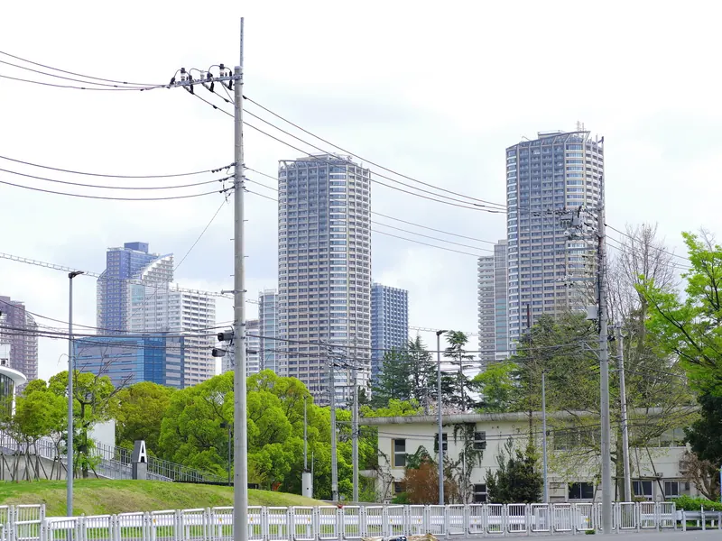

トップ ＞ 世田谷区と川崎市
世田谷区と川崎市、出産と子育てのお金はどちらが多い？保育料まで入れると約189万円の差

川崎市もらえるお金から保育料を引いた金額の差です。世田谷区は約44万円のプラス、川崎市は約145万円のマイナスになります。
差のほとんどは保育料です。東京都は1人目の子から0歳から2歳の保育料が無料ですが、川崎市は世帯の収入に応じてかかります。
川崎市は家賃が安いので、その分で取り戻せるように見えます。家賃相場の差を入れて計算すると、差は約28万円まで縮まりますが、それでも世田谷区のほうが多い結果でした。
計算に使ったご家庭の条件
| 働き方と年収 | 夫は会社員で600万円、妻は会社員で400万円 |
|---|---|
| お子さん | 1人目 |
| 出産の予定 | 2027年6月 |
| 住み始める時期 | 妊娠中（2027年1月） |
| 保育園 | 1歳の4月から認可保育園に預ける |
| 計算する期間 | お子さんが3歳になった最初の4月まで |
条件が違うと結果も変わります。
もらえるお金を比べる
| もらえるお金 | 世田谷区 | 川崎市 |
|---|---|---|
| 018サポート（東京都、月5,000円） | 23万円 | 対象外 |
| 赤ちゃんファーストギフト（東京都） | 10万円分 | 対象外 |
| バースデーサポート（東京都） | 6万円相当 | 対象外 |
| 出産費助成制度（世田谷区） | 5万円 | 対象外 |
| 合計 | 44万円 | 0円 |
世田谷区の44万円のうち39万円は、東京都の制度です。都内のどの区に住んでも受け取れます。世田谷区の独自の制度は、出産費助成の5万円です。
川崎市には、1人目の出産でもらえる市の独自の給付が見つかりませんでした。児童手当や出産育児一時金のように、全国どこでも同じ金額のお金は、この比較に入れていません。
保育料を比べる
| 世田谷区 | 川崎市 | |
|---|---|---|
| 0歳から2歳の保育料（月額） | 0円 | 6万500円 |
| 1歳の4月から2年間の合計 | 0円 | 145万2,000円 |
川崎市の保育料は、世帯の市民税の額で決まります。上の条件のご家庭は、25段階ある階層のうち19番目にあたります。収入がもっと高いご家庭では、月額は最高で8万2,800円になります。
3歳児クラスからは、全国どこでも保育料が無料になります。差が出るのは、0歳から2歳の間だけです。
家賃相場の差を入れるとどうなるか
| 世田谷区 | 川崎市 | |
|---|---|---|
| 家賃の目安（3部屋の民間の賃貸） | 月13.0万円 | 月9.8万円 |
| 計算する期間（51か月）の家賃の差 | 約161万円安い | |
| もらえるお金と保育料の差 | 約189万円少ない | |
| 差し引き | 約28万円少ない |
川崎市は家賃が月に約3.2万円安く、51か月で約161万円の差になります。それでも保育料の負担のほうが大きく、差し引きでは川崎市のほうが約28万円少なくなります。
家賃の目安は、2023年の国の統計から計算した推計です。今から借りる場合の家賃は、どちらもこれより高くなります。実際に探す物件の家賃で計算し直すことを勧めます。
保育園の入りやすさ
| 世田谷区 | 川崎市 | |
|---|---|---|
| 待機児童（2026年4月） | 166人 | 0人 |
金額では世田谷区が多い結果ですが、保育園に入れるかどうかでは川崎市のほうが数字が良いです。世田谷区は、2026年4月の待機児童が都内でいちばん多い区でした。
上の金額は、認可保育園に入れた場合の計算です。入れずに認可外の保育園を使うと、保育料がかかり、結果が逆になることがあります。
区と市ごとの詳しいページ
もらえるお金の条件、申請の期限、年収別の保育料は、それぞれのページにまとめています。
まとめ
- 共働きで保育園に預けるなら、お金の面では世田谷区が有利です。家賃相場の差を入れても結果は変わりませんでした。
- 保育園に入れるかどうかでは、待機児童が0人の川崎市のほうが数字が良いです。
- 3歳まで家庭で育てるなら、家賃が安い川崎市が有利です。